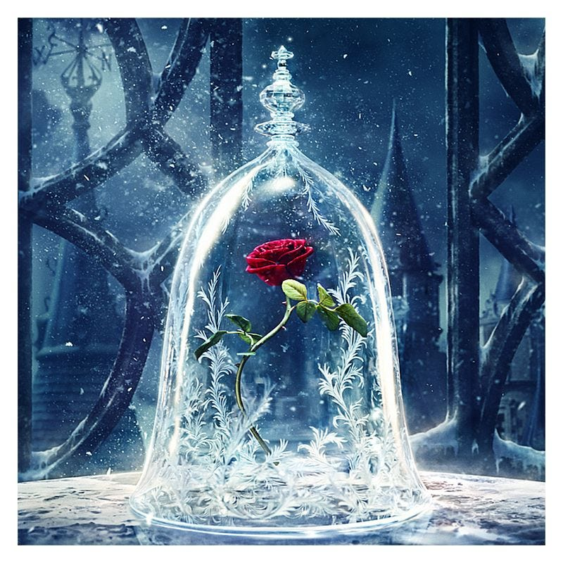

Beauty and the Beast takes place in an unnamed land in an unspecified location. Beauty is the youngest of 12 siblings and the daughter of a wealthy merchant. One day, the family’s house burns down, which sets off a string of unfortunate circumstances, forcing the family to move to the country. While Beauty’s siblings are discontent with the change, Beauty remains steadfast and cheerful, which causes all who meet her to call her “Beauty.”
Two years later, the merchant learns that one of his ships wasn’t lost and goes to reclaim his wares. All his children ask for extravagant gifts upon his return, except Beauty—who wants only a single rose. Learning that his wares were stolen, the merchant returns home but is waylaid by a terrible snowstorm in the woods near his house. After wandering through the trees, he comes upon a magnificent, magical castle with a garden of blooming roses. Wanting to fulfill at least one request from his children, he picks a rose for Beauty, but the castle’s master—a terrible Beast—stops him from leaving.
The merchant begs for forgiveness, explaining the rose is for his daughter, and the Beast lets the man leave under the condition that he or one of his children will return to pay the debt owed for the rose. At home, the merchant explains what happened, and Beauty offers to go in his place, since her desire for the rose caused the problem. Although the Beast frightens her, she agrees to stay forever and to never see her family again.
The following days aren’t as sorrowful as Beauty expected. She explores the palace, making animal friends who treat her like a queen, and watches grand performances through a magic mirror. The Beast visits her only at dinner, and he repeatedly asks her to marry him; she always refuses. At night, Beauty dreams of a handsome stranger who implores her not to be deceived by appearances, even as she falls in love with the stranger because he’s so beautiful.
After some time, Beauty asks the Beast if she may visit her family, promising to return in two months. An angry Beast agrees, and Beauty wakes to find herself in the company of the merchant and her siblings. Her time there is uncomfortable, and adding to her discomfort is that she has no dreams of her handsome stranger. When she finally returns to the palace, she finds the Beast nearly dead from heartbreak. She nurses him back to health, agreeing to marry him—and the next morning, the Beast is gone, replaced by the man from her dreams.
This man is the Beast’s true form. He’s a prince whom a fairy cursed long ago, and through the help of another fairy, Beauty’s becoming his wife met the circumstances to break that curse. Beauty learns that she’s really the daughter of royalty, and her birth parents—along with the merchant and his family—attend the wedding. Beauty and the prince live happily ever after.